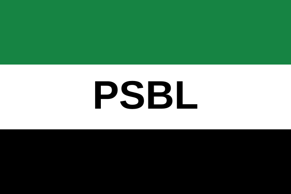

Missão
Contribuir para o debate democrático brasileiro com um projeto nacional, liberal, responsável e comprometido com a soberania, a ordem constitucional e o desenvolvimento.
O PSBL é apresentado como partido em formação e não como partido oficialmente registrado no TSE, salvo confirmação formal por parte das autoridades competentes.
Meu nome é Gabriel Biagi Souza, sou fundador do Partido Soberania Brasileira Liberal (PSBL), tenho 13 anos, e estudante da área de Tecnologia da Informação. Desde cedo, desenvolvi um profundo interesse pela política e pelo funcionamento das instituições públicas, buscando compreender os desafios que impedem o pleno desenvolvimento do Brasil. O que mais me preocupa é a persistência de problemas estruturais na administração pública, como a corrupção, o desvio de recursos públicos, os acordos internacionais que não atendem adequadamente aos interesses nacionais e a estagnação do desenvolvimento socioeconômico. Diante desse cenário, decidi fundar o PSBL, com o propósito de defender uma nova perspectiva para o futuro do país, fundamentada na soberania nacional, na valorização da pátria, na responsabilidade política e no compromisso com os interesses do povo brasileiro. Acredito que o Brasil possui potencial para alcançar um novo patamar de desenvolvimento, desde que suas instituições atuem com transparência, responsabilidade e compromisso com a população. Meu objetivo é contribuir para a construção de um projeto político que valorize a independência nacional, combata a corrupção e promova um futuro mais próspero para o país. O PSBL nasce dessa convicção: a de que o Brasil precisa de um projeto sério, comprometido com sua soberania, suas potencialidades e seu povo.
O projeto do Partido Soberania Brasileira Liberal nasce de um esforço coletivo de organização política, inspirado na defesa da soberania nacional, da liberdade individual, da iniciativa privada e da responsabilidade pública.
Seu desenvolvimento se dá em um processo institucional de formação, com foco na definição de princípios, organização partidária, propostas, documentos e mobilização de apoiadores e militantes.

Contribuir para o debate democrático brasileiro com um projeto nacional, liberal, responsável e comprometido com a soberania, a ordem constitucional e o desenvolvimento.
Ser uma referência política de organização institucional e pluralidade popular, com foco em liberdade, segurança, saúde, educação, infraestrutura e desenvolvimento regional.
Estão no centro do projeto a soberania nacional, a liberdade econômica, a responsabilidade individual, o respeito às leis, à cultura e às instituições democráticas.
O PSBL busca dialogar com a identidade brasileira, reconhecendo a importância da cultura, da tradição institucional, da diversidade regional e do respeito às liberdades civis. A organização partidária, nesse momento, se estrutura como um processo transparente e democrático de formação, com regras claras, aprimoramento programático e mobilização social.